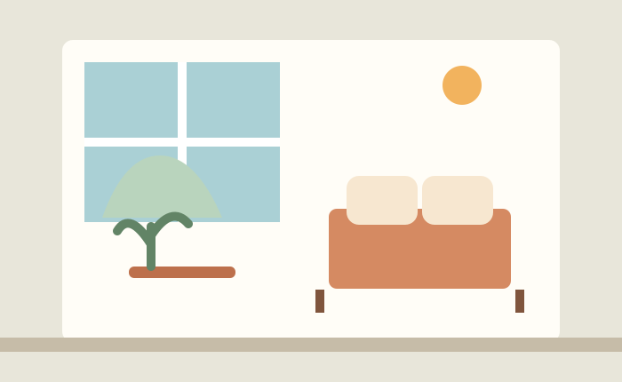

Sidi Bou Saïd · 2 personnes
Appartement Dar El Bahar
Un appartement clair dans un quartier calme. Le café, les commerces et le village sont proches.
1 chambre · Wi-Fi · Cuisine · Balcon
160 DT / nuit
Demander une réservationTunis et les alentours
Voici des exemples de maisons et appartements dans le Grand Tunis.
Sidi Bou Saïd · 2 personnes
Un appartement clair dans un quartier calme. Le café, les commerces et le village sont proches.
1 chambre · Wi-Fi · Cuisine · Balcon
160 DT / nuit
Demander une réservation
Centre-ville · 2 personnes
Un studio simple, près des transports et du centre de Tunis. Bien pour un court séjour.
1 lit · Wi-Fi · Cuisine · Climatisation
95 DT / nuit
Demander une réservation
Gammarth · 5 personnes
Une maison avec jardin pour un séjour en famille. La plage est à quelques minutes en voiture.
2 chambres · Jardin · Parking · Cuisine
220 DT / nuit
Demander une réservationLes annonces et les tarifs sont fictifs et servent à présenter le site.